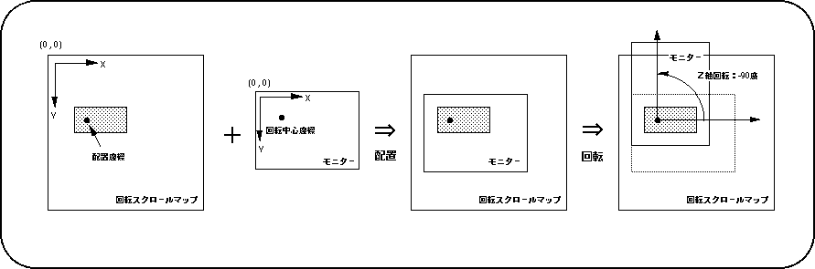

Return to previous page | Return to menu | Go to next page
Display position setting
● Normal scroll screen
Determines the display position of the normal scroll screen with the function set.
The library function “slScrPosNbg0 to 3” is used to determine the display position of the normal scroll screen.
- [void slScrPosNbg0-3 (FIXED posx, FIXED posy);]
- Set the display coordinates of the normal scroll screen.
For the parameter, substitute the XY coordinate value (scroll coordinate system) to determine where the monitor is placed on the scroll map.
The alignment reference point for the normal scroll screen is the upper left corner of the monitor.
● Rotary scroll screen
Determines the coordinates and rotation center coordinates of the rotary scroll plane that has been set.
The function “slLookR” is used to determine the display position of the rotating scroll screen, and the function “slDispCenterR” is used to determine the rotation center coordinates.
- [void slLookR (FIXED posx, FIXED posy);]
- Set the coordinates of the rotation scroll screen and save the information in the current rotation parameter
.
For the parameter, substitute the scroll XY coordinate value with the top left of the scroll map as the origin.
The display position of the rotary scroll is determined by the arrangement coordinates and the rotation center coordinates.
- [void slDispCenterR (FIXED posx, FIXED posy);]
- Set the rotation center coordinate (disappearance point) of the rotation scroll screen and save the information in the current rotation parameter.
For the parameter, substitute the screen XY coordinate value to place the rotary scroll screen.
The display position of the rotary scroll is determined by the arrangement coordinates and the rotation center coordinates.
Figure 8-16 Relationship between display position and rotation center position

Note) The Z axis of the scroll surface is forward in front of the screen.
The functions “slLookR” and “slDispCenterR” can be set for each of the rotation parameters A and B. The function “slCurRpara” is used to change the rotation parameter to be set (current rotation parameter). For all the functions used for rotary scrolling and whose function name ends with “R”, the functions assigned to the functions can be set separately for the rotation parameters A and B.
Return to previous page | Return to menu | Go to next page